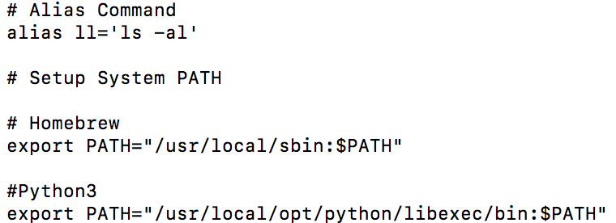

Python2 與 Python 3 共存的設定 (以 Mac 為例）
Posted on Tue 12 March 2019 in Python
前言
當你的 Mac 系統要同時使用到 Python 2 與 Python 3 的專案時，就會遇到需要同時安裝多個 Python 版本在電腦中，可是此時要如何設定透過指令啟動不同的版本，以下我們以 Python 2.7.15 與 Python 3.6.5 為例子，並舉出兩個常見的 Python 2 與 Python 3 例子。
解決方法
例子一：Mac 內建 Python 2 與 安裝 Homebrew 的 Python 3
若先前沒有以 Homebrew 安裝 Python 2 的話，那麼當下安裝 Python 3 時，如果從 Terminal 中直接輸入 python，如下：
$> python
會出現的是內建的 Mac Python 2.7：

這是為何呢？
我們來查看 /usr/local/bin 目錄下，你會發現並沒有 Python 3 提供的 python 可執行檔，而只有 python3 執行檔，因此當你輸入 python 時， Mac 因為來到 /usr/local/bin 目錄下沒有找到 python 可執行檔，才會保持原先的狀態，近一步往下一個位置找，並找到內建的版本，直接使用內建的 python 2.7。
只有當輸入 python3，你才會顯示 Homebrew 的 Python3.6.5
$> python3

如果想要讓 Mac Terminal 在輸入 python 指令時，會自動開啟 Homebrew 安裝的 Python 3，解決辦法是設定 /usr/local/opt 下的 Homebrew Python 3 來源到系統環境變數前，使 PATH 先讀到 Homebrew 的 Python3：

export PATH="/usr/local/opt/python/libexec/bin:$PATH"
完成後重開 Terminal 或透過 source 執行，即可成功，如下圖。
到此，可以透過 python3 或設定好的 python 指令啟動 Python 3 。
例子二： Homebrew 安裝 Python 2 與 Python 3 時
當透過 Homebrew 安裝了 Python2 與 Python 3 後，分別查看 /usr/local/bin 與 /usr/local/opt 時會發現 /usr/local/bin 下的 python 是導向 Homebrew 安裝 Python 2.7.15，如下圖：
然而 /usr/local/opt 則是 python 位置導向 Python3：
因此當我們分別輸入以下三種指令情況
$> python
$> python2
$> python3
會發現內建的 Python 指令會指定 Homebrew 安裝的 Python 2.7.15:
此原因透過 export 會發現， 因為系統 PATH中會先讀取到的 /usr/local/bin ，因此 Homebrew 的 Python 會取代掉 Mac 內建的 Python 。
再來因為 /usr/local/bin 下的 python 指令是 Link 到 Homebrew 的 python@2 ，因此會是執行 Python 2.7 而非 Python 3。

此時，如果想要把預設的 python 替換成 Homebrew 的 Python3 ，那麼便是如同例子一依樣設定 Python 3 所在的位置
export PATH="/usr/local/opt/python/libexec/bin:$PATH"
到環境變數中，如下後再重新開啟 Terminal 或是透過 source 啟動即可。

此時 PATH 環境變數會先讀取到 Python 3 的位置，並抓取 python 可執行檔。

因此當再次測試 python 指令會發現預設的 python 已經變為 Python 3 的位置。
$> python
$> python2
$> python3

可以透過 python -h 查看路徑：

即可設定完成。
預設 python 指令對 pip 的影響
上述的 python 指令同時也會對 pip 造成影響，如果現在預設的 python 是讀取 Python 3 那麼 pip 也會是 Python 3 的 pip，如下：
如果預設的 python 是讀取 Python 2 ，那麼 pip 則會是 Python 2 的 pip 。
明確區分 Homebrew Python 2 的來源
上述的設定中，如果想要明確區分 python 指令加入環境變數的來源，也可以對 Homebrew 的 python@2 加入環境變數，如下：
export PATH="/usr/local/opt/python@2/libexec/bin:$PATH"
因此未來便可以透過修改 .bash_profile 去做預設 python 指令讀取設定的開關：
最後觀察一下環境變數，分別設定完成。